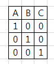
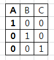
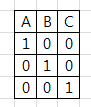
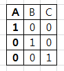
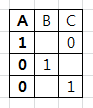
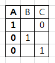
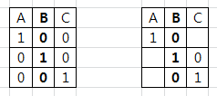
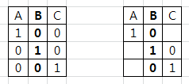
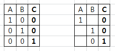

몬티 홀 문제
6/14/2014
문득 “에르되시(에어디쉬)가 몬티 홀 문제의 결론을 받아들이지 못하다가 결국 몬테카를로 시행을 하고 나서야 인정했다” 란 구절이 머릿속을 지나갔다.
생각해 보니 몬티 홀 문제를 그렇게 명확하게 이해하였던 것 같지 않아 이번 기회에 몬테카를로 시행을 반복해 주는 코드를 만들어 도랑치고 가재잡고 몬티 홀 문제도 풀어볼 생각으로 시작했다.
생각해 보니 몬티 홀 문제를 그렇게 명확하게 이해하였던 것 같지 않아 이번 기회에 몬테카를로 시행을 반복해 주는 코드를 만들어 도랑치고 가재잡고 몬티 홀 문제도 풀어볼 생각으로 시작했다.
몬테카를로 시행이란 게 결국 랜덤하게 흩뿌려 주는 거지만 랜덤이야 rand() 가 하는 거고 그것으로 무엇을 해결해야 가치가 있는 것이니 우선 문제 자체를 명확히 하기 위해 오랫만에 몬티 홀 문제를 다시 읽어 보았다.
세 개의 문 중에 하나를 선택하여 문 뒤에 있는 선물을 가질 수 있는 게임쇼에 참가했다. 한 문 뒤에는 자동차가 있고, 나머지 두 문 뒤에는 염소가 있다. 이때 어떤 사람이 예를 들어 1번 문을 선택했을 때, 게임쇼 진행자는 3번 문을 열어 문뒤에 염소가 있음을 보여주면서 1번 대신 2번을 선택하겠냐고 물었다. 이때 원래 선택했던 번호를 바꾸는 것이 유리할까?
문이 세 개 있으니 gates[3] = {a0, a1, a2}, a_i 는 0 혹은 1 (i는 0, 1, 2) 까지 쓰다가 이거 경우의 수가 몇 개 없는데? 써 볼까 란 생각이 들었다.
문을 A, B, C 그리고 차를 1, 염소를 0 이라 하자. 그러면 가능한 경우는 아래와 같이

이 될 거고, A 를 택했다면

따라서 1을 만날 확률은 1/3.

이 될 거고, A 를 택했다면

따라서 1을 만날 확률은 1/3.
그런데 사회자가 선택하지 않은 B, C 중 차가 없는 하나를 열어 준 상태는 다음과 같다 (염소가 2개인 경우 A>B>C 순으로 선택했다고 가정하자)

이미 선택한 A 가 아니라 열리지 않은 다른 문으로 선택을 변경하면 1이 나올 확률은 2/3.
이거구만. 이거였어. 쳇 이게 직관적으로 다가오지 않았다니. 늙었구만.

이미 선택한 A 가 아니라 열리지 않은 다른 문으로 선택을 변경하면 1이 나올 확률은 2/3.
이거구만. 이거였어. 쳇 이게 직관적으로 다가오지 않았다니. 늙었구만.
비슷할 것이 자명하지만 굳이 B, C 를 처음에 선택한 경우까지 서술한다면



가 되어 사랑은 움직이는 선택을 변경해야 한다는 것이 명확해졌다.
가 되어 사랑은 움직이는 선택을 변경해야 한다는 것이 명확해졌다.
여기까지 하고 이 글을 쓰고 있다.
그런데 뭔가 하려고 한 것 같긴 한데 생각이 나지 않는다.
뭐 대수롭잖은 것이었겠지.
그런데 뭔가 하려고 한 것 같긴 한데 생각이 나지 않는다.
뭐 대수롭잖은 것이었겠지.